b0 <- 1
b1 <- 2
sigma <- 5Lecture 21: Statistical Models, part 2
Overview
Last week, we did a brief overview of statistical models in the context of data visualization. Today, we’re going to try to connect those ideas to some R code.
Rather than using a slideshow, I’ve put together this document showing how to simulate data under various regression models, fit the model to the data to recover parameter estimates, and visualize the results.
To simulate data under a model, you have to arbitrarily choose values for the parameters of that model. This is uncomfortable for some beginners, as you are used to getting values of parameters from your fitted models.
Whether you are a beginner or advanced stats user, I highly recommend getting comfortable with the idea of simulating data to help you understand your statistical models. It can really clarify (among other things) the assumed data-generating process, the assumption of the model, and the correct interpretation of your results.
Ordinary Linear Models (LMs)
The Math
We wrote the equation for an ordinary linear model (AKA, linear regression) as:
\[y_i = \beta_0 + \beta_1x_i + \epsilon_i\]
where \(i\) indexes each observation (AKA, “item” or row of data).
Recall that:
- \(\beta_0\) is the y-intercept of the line,
- \(\beta_1\) is the slope of the line,
- \(x_i\) is the value of the covariate, \(x\), for the ith observation,
- \(\epsilon_i\) is the value of the residual for the ith observation,
- and \(\epsilon\) is a normally distributed random variable with a mean of 0 and constant variance \((\sigma^2)\). I.e.,
\[\epsilon \sim Normal(0, \sigma^2)\]
Under this model, \(y\) is the data we observe and \(x\) is the covariate we measure. That leaves \(\beta_0\), \(\beta_1\), and \(\sigma^2\) as parameters, i.e., quantities we wish to estimate. (We typically proceed as if \(\sigma^2\) is “known” during model fitting and inference).
Note that we can have more than one covariate, but here, we’ll stick to a single predictor.
Simulated Data
To simulate from a linear regression, we need to pick values for the parameters. I’ll proceed with:
- \(\beta_0 = 1\)
- \(\beta_1 = 2\)
- \(\sigma = 5 \Rightarrow \sigma^2 = 5^2 = 25\)
We also need values for our covariate, \(x\). The model doesn’t make any assumptions about the distribution of \(x\). You can go get a real dataset, you can manually make-up a vector of numbers yourself, or you can use a random number generator. I’m going to use the random number generator for convenience, but which random number generator I use is not important. This is also where I decide the sample size (one element of x for each row of data).
set.seed(123)
x <- runif(n = 200, min = -2, max = 2)Now we can randomly choose values for the residuals, \(\epsilon\). Unlike with \(x\), it does matter how I choose these values. Our model says that \(\epsilon\) is normally distributed with a mean of 0 and a standard devation of \(\sigma\) (which we chose above).
set.seed(123)
epsilon <- rnorm(n = length(x), mean = 0, sd = sigma)Now we have all the pieces to calculate y.
y <- b0 + b1*x + epsilonFor convenience, I’ll put all the data together in a data.frame. This is what your real data would look like – you don’t know the values of the parameters, but you do have the response variable (y) and the covariate (x).
lm_data <- data.frame(x = x, y = y)
head(lm_data) x y
1 -0.8496899 -3.501758
2 1.1532205 2.155554
3 -0.3640923 8.065357
4 1.5320696 4.416681
5 1.7618691 5.170177
6 -1.8177740 5.939777And of course, we can visualize this.
plot(lm_data$x, lm_data$y, xlab = "x", ylab = "y", main = "Scatterplot of Simulated Data")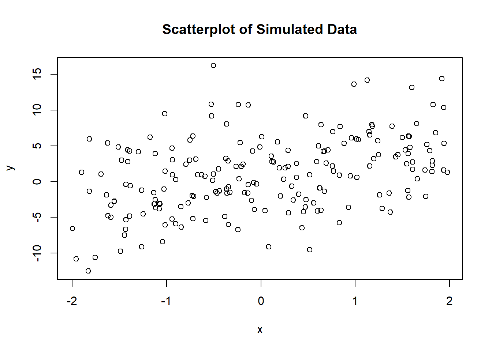
Model Fitting
Fitting an ordinary linear model in R is quite easy now.
my_lm <- lm(y ~ x, data = lm_data)Done! We could print some useful information with summary().
summary(my_lm)
Call:
lm(formula = y ~ x, data = lm_data)
Residuals:
Min 1Q Median 3Q Max
-11.4676 -3.0511 -0.1896 2.9183 16.2101
Coefficients:
Estimate Std. Error t value Pr(>|t|)
(Intercept) 0.9590 0.3343 2.868 0.00457 **
x 1.9279 0.3057 6.306 1.83e-09 ***
---
Signif. codes: 0 '***' 0.001 '**' 0.01 '*' 0.05 '.' 0.1 ' ' 1
Residual standard error: 4.727 on 198 degrees of freedom
Multiple R-squared: 0.1672, Adjusted R-squared: 0.163
F-statistic: 39.76 on 1 and 198 DF, p-value: 1.83e-09We can see that our estimated intercept (0.959) is quite close to the true value (1) and that our estimate slope (1.928) is quite close to the true value (2).
What about our residual standard deviation \((\sigma)\)? We can get the residuals from a fitted model with resid() and calculate their standard devation with sd().
sd(resid(my_lm))[1] 4.715137Not bad! Close to our true value of \(\sigma\) (5). Note that this was not a parameter that our model estimated (we assumed it “known”), but something very close to it did show up in the model summary (as Residual standard error:).
Model Visualization
Now back to data viz – the focus of this course. What should we visualize in this context?
First, I’ll note that there is a plot() method for an object of class lm. This produces diagnostic plots that can help you determine if you met the assumptions of your model. This is important, but not the focus of this course. This is the code, but I won’t show the output:
plot(my_lm)Beyond diagnostic plots, I’d say there are two things we might be interested in visualizing. The first is the parameter estimates themselves, and the second is the model prediction, i.e., what is the expected value (= “average”) of our response variable for a given value of \(x\)?
Remember – it is also critically important to communicate the uncertainty in your estimates. I’m not saying every visualization must show uncertainty (for complex models, the uncertainty can create clutter), but you should find another way to communicate it if your main visualization does not show it.
Parameter Estimates
Because the model assumed \(\sigma\) known, I will ignore it here. For the other parameters, (\(\beta_0\) and \(\beta_1\)), we can plot their point estimate, a confidence interval, and show whether or not the confidence interval overlaps 0.
We can calculate confidence intervals for the parameters with confint(). By default, it returns a 95% confidence interval, but see ?confint to change that.
confint(my_lm) 2.5 % 97.5 %
(Intercept) 0.2996616 1.618321
x 1.3249945 2.530789To plot, we want to combine the confidence intervals with the point estimate:
# Combine coefficients with confidence intervals
beta_data <- as.data.frame(cbind(coef(my_lm), confint(my_lm)))
# Rename columns
names(beta_data) <- c("est", "lwr", "upr")
# Add a label
beta_data$param <- c("b0", "b1")
# Print
beta_data est lwr upr param
(Intercept) 0.9589914 0.2996616 1.618321 b0
x 1.9278916 1.3249945 2.530789 b1Now we can plot with ggplot2.
library(ggplot2)
ggplot(beta_data, aes(x = param, y = est, ymin = lwr, ymax = upr)) +
geom_errorbar(width = 0.2) +
geom_point(size = 2) +
geom_hline(yintercept = 0, color = "red", linetype = "dashed") +
labs(x = "Parameter", y = "Estimate (95% CI)") +
scale_x_discrete(breaks = c("b0", "b1"), labels = expression(beta[0], beta[1]))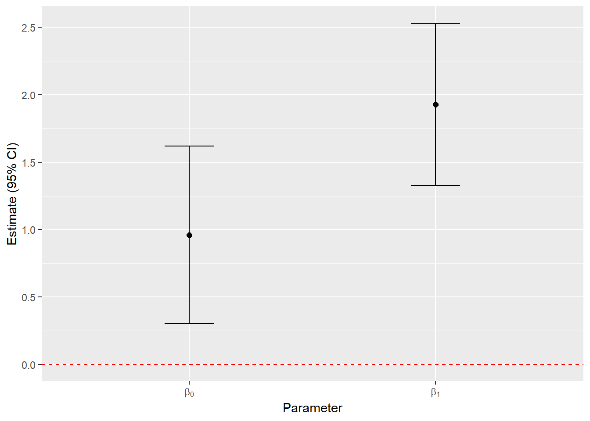
This plot is useful for inference on the parameters themselves. We can see from the confidence intervals whether we are “confident” that the parameter is different from 0.
This plot shows the variance in \(\beta_0\) and \(\beta_1\), i.e., the 95% confidence interval is calculated from the standard error, which is the square root of the variance of the sampling distribution. What it doesn’t show is the covariance between \(\beta_0\) and \(\beta_1\). We can see the variance-covariance matrix estimated by the model.
vcov(my_lm) (Intercept) x
(Intercept) 0.111785116 -0.002389777
x -0.002389777 0.093468439We can see that \(\beta_0\) and \(\beta_1\) have some negative covariance. (The diagonal gives the variance, the off-diagonal cells give the covariance).
How can we visualize this? One way would be to draw a large number of samples of \(\beta_0\) and \(\beta_1\) from a multivariate normal distribution and use them to make a kernel density plot.
# Load a package for working with multivariate distributions
library(mvtnorm)
# Draw a large number of samples from a multivariate normal distribution
beta_samps <- rmvnorm(n = 10000,
# mean is given by the point estimate
mean = coef(my_lm),
# sigma is given by the var-covar matrix
sigma = vcov(my_lm))
head(beta_samps) (Intercept) x
[1,] 1.6892016 2.320890
[2,] 0.8683194 2.094938
[3,] 0.8222467 1.783848
[4,] 0.6975644 1.749060
[5,] 1.5111278 1.905211
[6,] 0.9979478 2.001942# Convert to data.frame for plotting with ggplot
beta_samps <- as.data.frame(beta_samps)
names(beta_samps) <- c("b0", "b1")
# Plot
ggplot(beta_samps, aes(x = b0, y = b1)) +
geom_density_2d_filled() +
coord_cartesian(expand = FALSE) +
labs(x = expression(beta[0]),
y = expression(beta[1]))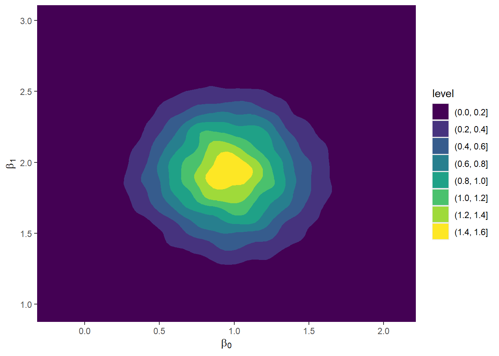
If there were strong covariance between \(\beta_0\) and \(\beta_1\), this ellipse would have some strong tilt.
Predictions
Now we’ll move on to plotting the model predictions. We want to visualize the expected value (= “average”) of \(y\) for a given value of \(x\)? In some ways, you can think of this as a more synthetic view of your model than just looking at the parameters.
In addition, we can visualize two quantities related to the uncertainty in the model:
- The confidence interval around the regression line shows our uncertainty in the parameters of that line. The confidence interval will shrink as the sample size goes up, because we will be less uncertain about the expected value of \(y\), given \(x\).
- The prediction interval around the regression line tells us about likely values of \(y\), rather than the expected value. In this model, that takes into account the residuals. For our prediction interval, we are also thinking about the spread in the data. I.e., a 95% prediction interval should contain ~95% of the points (technically, from a new sample). A 95% confidence interval should not contain 95% of the points.
Let’s start by just plotting the regression line. We will use the generic predict() function to make our predictions, which has a specific method for an object of class lm.
# Create a new data.frame of x values to predict over
my_lm_pred <- data.frame(x = seq(-2, 2, length.out = 100))
# Predict the value of the line
my_lm_pred$est <- predict(my_lm, newdata = my_lm_pred)
# Plot
p <- ggplot() +
# Plot the raw data points
geom_point(aes(x = x, y = y), data = lm_data) +
# Plot the regression line
geom_line(aes(x = x, y = est), data = my_lm_pred,
color = "purple", linewidth = 1.5)
p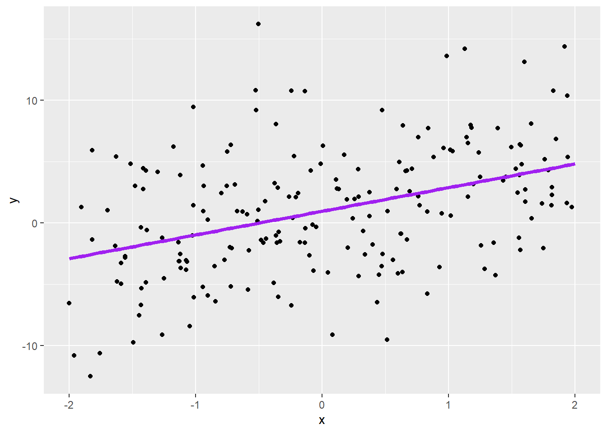
Now let’s add the confidence interval. We can do that simply by adding an argument to predict().
# Predict confidence interval
my_lm_confint <- cbind(my_lm_pred,
predict(my_lm, newdata = my_lm_pred,
interval = "confidence"))
# Plot
p2 <- p +
# Add the confidence interval
geom_ribbon(aes(x = x, y = est, ymin = lwr, ymax = upr), data = my_lm_confint,
fill = NA, color = "purple", linewidth = 1, linetype = "dashed")
p2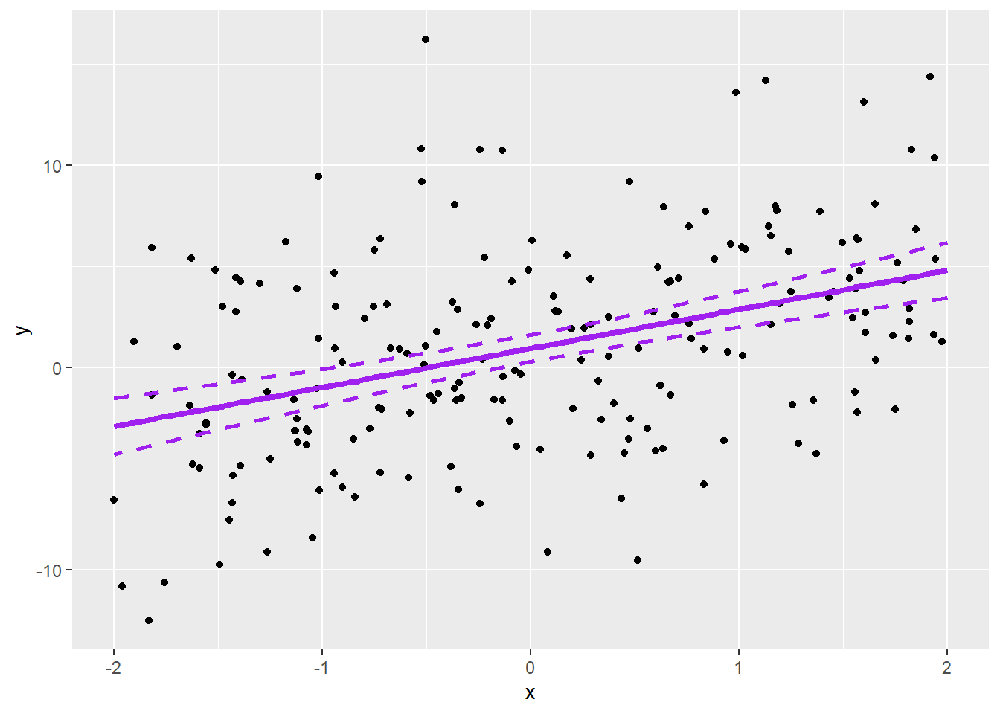
Notice that the confidence interval is very narrow and doesn’t include all the data points (it shouldn’t!). That means that we have low uncertainty about the mean of \(y\), given \(x\). Now let’s add the prediction interval.
# Predict prediction interval
my_lm_predint <- cbind(my_lm_pred,
predict(my_lm, newdata = my_lm_pred,
interval = "prediction"))
# Plot
p3 <- p2 +
# Add the prediction interval
geom_ribbon(aes(x = x, y = est, ymin = lwr, ymax = upr), data = my_lm_predint,
fill = NA, color = "hotpink", linewidth = 1, linetype = "dashed")
p3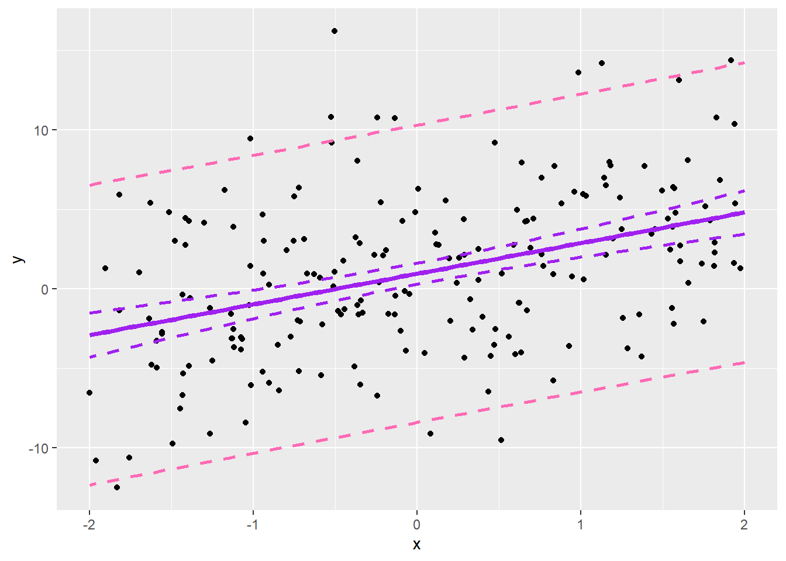
You can see the prediction interval is much wider. You would expect only about 5% of the data points would fall outside of that envelope. Note that this doesn’t depend (much) on sample size and shouldn’t shrink with more data points.
Generalized Linear Models (GLMs)
The Math
Last week, we said that GLMs have 3 components:
- an exponential family probability distribution (e.g., normal, binomial, Poisson),
- a linear predictor (e.g., \(\beta_0 + \beta_1x\)),
- and a link function that constrains the linear predictor to values reasonable for the chosen probability distribution.
To be specific, logistic regression is a GLM with a binomial distribution and a logit link function. The equation is:
\[logit(p_i) = \beta_0 + \beta_1x_i\] \[y_i \sim Binomial(N_i, p_i)\]
where \(N\) is the number of trials (e.g., number of coin flips) and is assumed known.
Everything here is linear on the link scale, but after “back-transforming”, the resulting pattern is nonlinear. By back-transforming, I mean applying the inverse of the link function to the linear predictor, e.g.:
\[p_i = logit^{-1}(\beta_0 + \beta_1x_i)\]
The inverse of the logit function is the logistic function, which constrains each \(p_i\) to fall between 0 and 1. For example:
Code
# Some x
x <- seq(-2, 2, length.out = 100)
# Some betas
b0 <- -2
b1 <- 3
# The linear predictor
lp <- b0 + b1*x
# Back-transform
p <- plogis(lp)
# Put it in a data.frame for ggplot
df <- rbind(data.frame(x = x, y = lp, which = "LP"),
data.frame(x = x, y = p, which = "p")
)
# Plot
ggplot(df, aes(x = x, y = y)) +
facet_wrap(~ which, scales = "free") +
geom_line(linewidth = 1, color = "lavender") +
ggtitle("Logistic regression: linear predictor vs. p") +
theme_dark()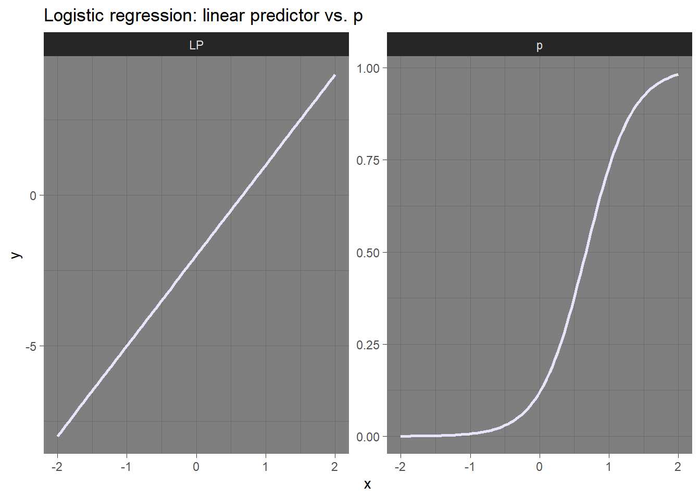
Simulated Data
To simulate from a GLM, we need to pick values for the parameters. I’ll proceed with:
- \(\beta_0 = -2\)
- \(\beta_1 = 3\)
- \(N = 1\) (e.g., a single coin flip for each observation, either heads (1) or tails (0))
b0 <- -2
b1 <- 3
N <- 1And our covariate:
set.seed(321)
x <- runif(n = 200, min = -2, max = 2)Now we calculate \(p\):
# Note plogis() is the inverse logit function
p <- plogis(b0 + b1*x)And draw random \(y\).
# Note plogis() is the inverse logit function
y <- rbinom(n = length(x), size = N, prob = p)Put resulting data in a data.frame.
glm_data <- data.frame(x = x, y = y)Note that effectively visualizing data from “coin flips” is difficult:
plot(glm_data$x, glm_data$y, xlab = "x", ylab = "y", main = "Scatterplot of Simulated Data")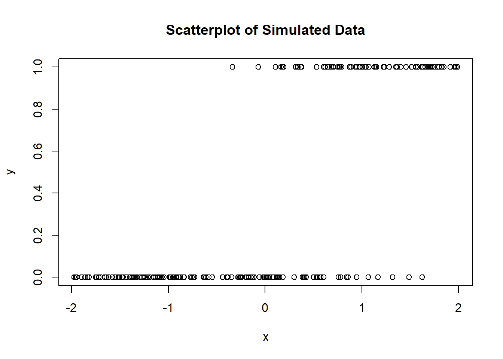
Model Fitting
Fitting a GLM in R requires only a tiny bit more code than an LM.
my_glm <- glm(y ~ x, data = glm_data, family = binomial(link = "logit"))Done! We can still print some useful information with summary().
summary(my_glm)
Call:
glm(formula = y ~ x, family = binomial(link = "logit"), data = glm_data)
Coefficients:
Estimate Std. Error z value Pr(>|z|)
(Intercept) -1.6420 0.3187 -5.152 2.58e-07 ***
x 2.8431 0.4182 6.798 1.06e-11 ***
---
Signif. codes: 0 '***' 0.001 '**' 0.01 '*' 0.05 '.' 0.1 ' ' 1
(Dispersion parameter for binomial family taken to be 1)
Null deviance: 260.19 on 199 degrees of freedom
Residual deviance: 118.89 on 198 degrees of freedom
AIC: 122.89
Number of Fisher Scoring iterations: 6We can see that our estimated intercept (-1.642) is quite close to the true value (-2) and that our estimate slope (2.843) is quite close to the true value (3).
Model Visualization
On to visualization! We can still get diagnostic plots with plot(my_glm), but I find them tricky to evaluate for non-normal distributions.
Parameter Estimates
Plotting parameter estimates is exactly the same as for an LM.
# Combine coefficients with confidence intervals
beta_data <- as.data.frame(cbind(coef(my_glm), confint(my_glm)))
# Rename columns
names(beta_data) <- c("est", "lwr", "upr")
# Add a label
beta_data$param <- c("b0", "b1")
ggplot(beta_data, aes(x = param, y = est, ymin = lwr, ymax = upr)) +
geom_errorbar(width = 0.2) +
geom_point(size = 2) +
geom_hline(yintercept = 0, color = "red", linetype = "dashed") +
labs(x = "Parameter", y = "Estimate (95% CI)") +
scale_x_discrete(breaks = c("b0", "b1"), labels = expression(beta[0], beta[1]))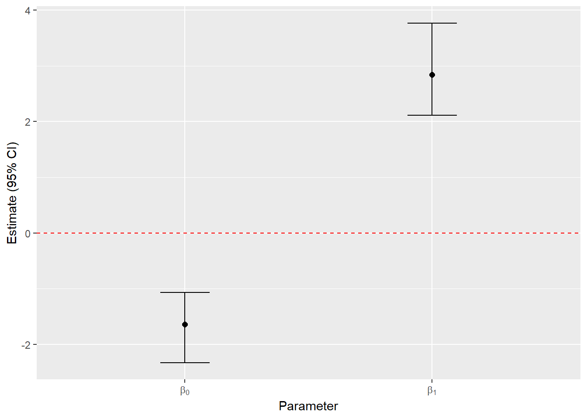
You can see the true values for the parameters ($beta_0 = $ -2, $beta_1 = $ 3) do fall inside the confidence intervals. You can also see that the estimated parameters are significantly different from 0.
Predictions
Predictions are mostly the same as with an LM. Additionally, you have to specify whether you want your predictions on the link scale (i.e., linear) or back-transformed (i.e., on the real scale). You choose this with the argument type, i.e., predict(..., type = "link") or predict(..., type = "response").
# Create a new data.frame of x values to predict over
my_glm_pred <- data.frame(x = seq(-2, 2, length.out = 100))
# Predict the value of the line (back-transformed)
my_glm_pred$est <- predict(my_glm, newdata = my_glm_pred, type = "response")
# Plot
p <- ggplot() +
# Plot the raw data points
geom_point(aes(x = x, y = y), data = glm_data) +
# Plot the regression line
geom_line(aes(x = x, y = est), data = my_glm_pred,
color = "purple", linewidth = 1.5)
p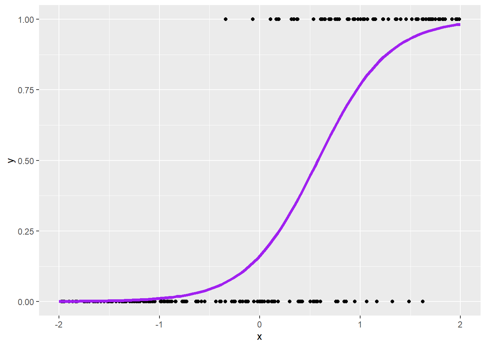
Now let’s add the confidence interval. The function predict() will not work for us here, so we have to create our confidence intervals ourselves. On the link scale, the confidence interval is:
\[\hat{p} \pm z_{cv} \times \textrm{SE}\]
where,
- \(\hat{p}\) is the point estimate for the parameter,
- \(z_{cv}\) is the critical value from the standard normal (AKA, z) distribution that determines the size of the confidence interval,
- and \(\textrm{SE}\) is the standard error for the parameter, which in this case is a function of the \(\beta\)s and their variance-covariance matrix. (
predict()will calculate this for us).
# Predict with standard errors
# Note this is now a list.
my_glm_se <- predict(my_glm, newdata = my_glm_pred, type = "link", se.fit = TRUE)
# Create data.frame with confidence interval
my_glm_confint <- my_glm_pred
my_glm_confint$logit_p <- my_glm_se$fit
my_glm_confint$se <- my_glm_se$se.fit
# Critical values for 95% confidence interval:
crit_lwr <- qnorm(0.025)
crit_upr <- qnorm(0.975)
# Lower bound on the logit scale
my_glm_confint$logit_lwr <- my_glm_confint$logit_p + crit_lwr * my_glm_confint$se
# Upper bound on the logit scale
my_glm_confint$logit_upr <- my_glm_confint$logit_p + crit_upr * my_glm_confint$se
# Back-transform
my_glm_confint$p <- plogis(my_glm_confint$logit_p)
my_glm_confint$lwr <- plogis(my_glm_confint$logit_lwr)
my_glm_confint$upr <- plogis(my_glm_confint$logit_upr)
# Plot
p2 <- p +
# Add the confidence interval
geom_ribbon(aes(x = x, y = est, ymin = lwr, ymax = upr), data = my_glm_confint,
fill = NA, color = "purple", linewidth = 1, linetype = "dashed")
p2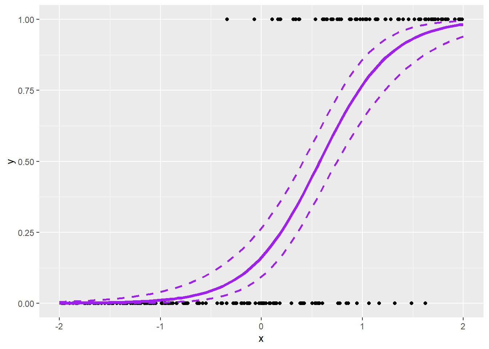
It probably makes less intuitive sense to calculate a prediction interval for logistic regression, especially when \(N = 1\). Be aware that the concept of residuals is not exactly the same for a GLM as for an LM. Generally, a good approach is to evaluate predictions using simulation. The R package DHARMa is specifically designed for this. I’d highly recommend checking out the DHARMa vignette for a great primer on understanding prediction/evaluation of GLMs or other more complex regression models.